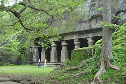
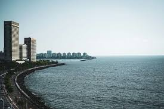

Some of the historic landmarks in Mumbai
Elephanta Caves

Elephanta Caves – Ancient rock-cut temples dedicated to Lord Shiva, famous for their sculptures and recognized as a UNESCO World Heritage Site.
Gateway of India

Gateway of India – A historic monument built in 1924 and one of Mumbai's most iconic landmarks overlooking the Arabian Sea.
Marine Drive

Marine Drive – A 3.6 km seaside promenade, known as the Queen's Necklace for its beautiful lights at night.